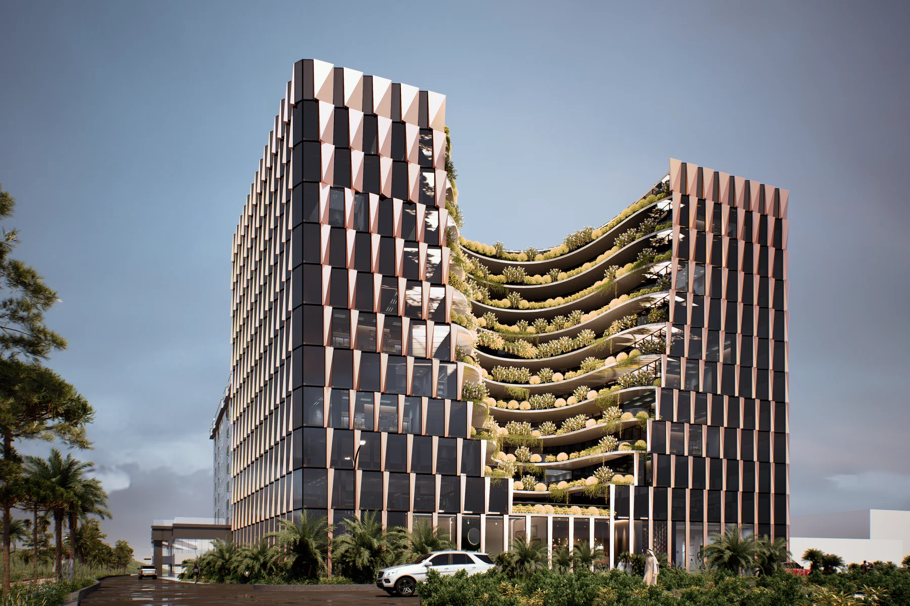
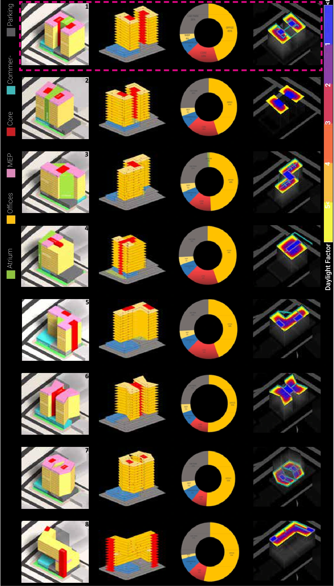
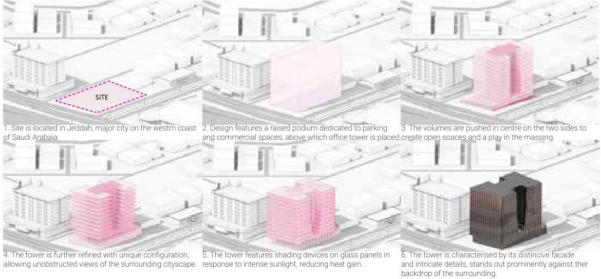
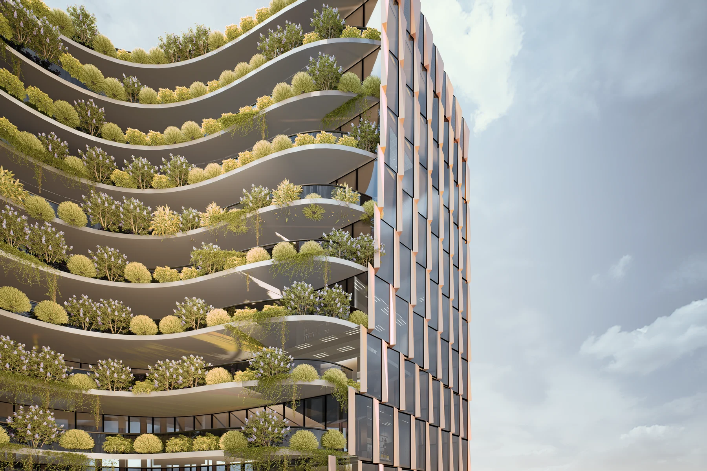
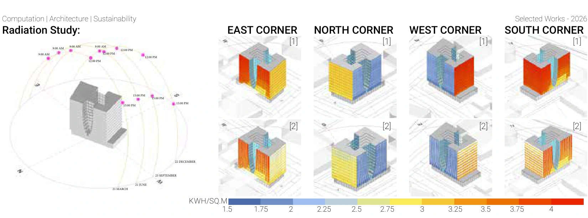
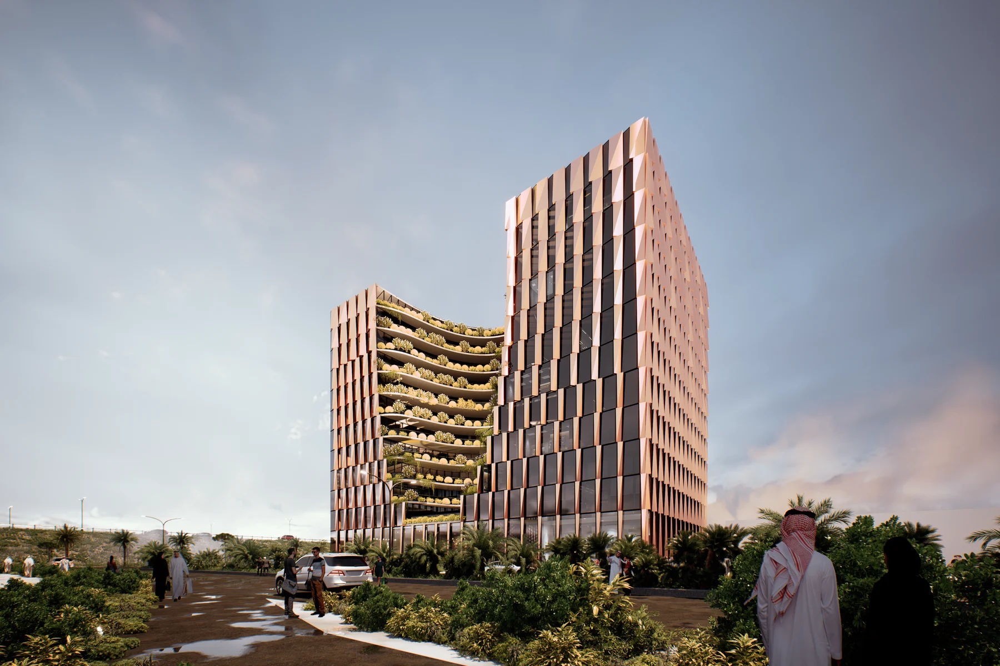
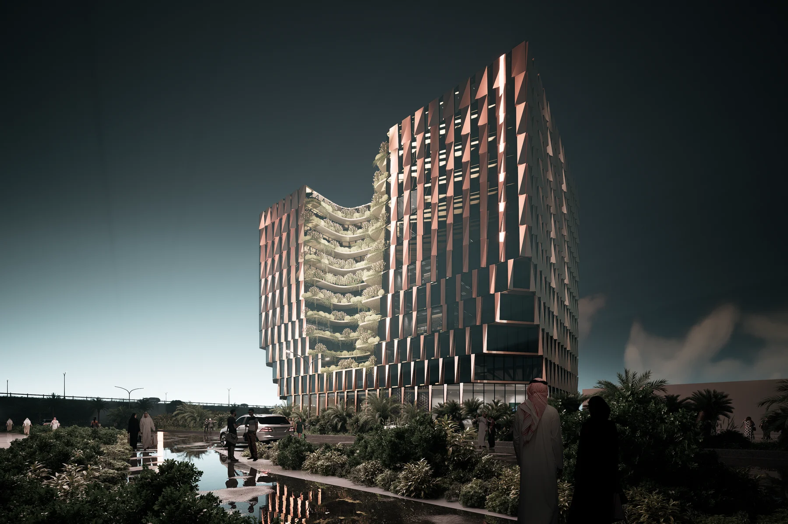

Professional Project · 2023–2024
Arwad Tower,
Jeddah
Parametric massing and environmental façade development for a contemporary workplace.
{kind=link}

Arwad Tower is a commercial office proposal near Jeddah Airport, designed for companies to sublet flexible office space. The design proceeds from a parametric comparison of eight massing options to the selection of an area-efficient, daylit atrium configuration, then develops a phyllotaxis-inspired shading façade in response to solar radiation. A commercial base, full-height atrium, open terraces and informal meeting spaces support the workplace above.
01 / Site and Urban Context
An office address in northern Jeddah
The site appraisal situates the project within the expanding urban area around the airport. It maps major roads, local access and nearby destinations, then examines how the surrounding district has changed over time. These studies establish both the building’s visibility from passing traffic and its relationship to the immediate street network.
The presentation also looks to desert rock formations and the projecting timber screens of Jeddah’s old city. These references introduce two architectural interests: a building form shaped by recesses and projections, and an envelope that mediates between interior space and the climate.

02 / Climate as a Design Input
Reading sun exposure before shaping the envelope
The portfolio’s dry-bulb temperature study highlights summer working-hour temperatures exceeding 45°C, establishing the need for effective façade shading. The wider site appraisal studies wind, humidity, thermal comfort, direct sun hours and incident radiation, with east and west exposure identified as important design concerns.
The site-scale diagrams below establish the environmental context. The design then moves to a more specific test of radiation on the glass panels, before and after shading devices are added, shown in the façade study later on this page.


03 / Defining the Buildable Volume
Plot occupation, setbacks and urban alignment
Before comparing tower forms, the study establishes the allowable envelope through plot occupation, setback zones and floor-area constraints. A separate alignment study relates the volume to the surrounding streets and identifies the underground allowance.
These constraints form the starting geometry for the massing exercise. The podium, parking and office volume must work together within the site rather than being resolved as independent objects.


04 / A Parametric Option Space
Comparing organisation, area and daylight
The computational workflow begins with a catalogue of eight massing options. Core placement, commercial-space distribution and parking layouts are varied to generate different configurations. Each option is compared through its programme distribution, built-up area (BUA) and daylight performance on a typical floor.
A parametric workflow enables rapid data extraction and automated comparison of area efficiency and daylight. The catalogue places massing views, programme diagrams and daylight-factor maps side by side, making the consequences of each geometric decision visible within one comparison.
Option 1 was selected because it achieved the maximum BUA while allowing ample daylight through the atrium. This establishes the next design problem: how to protect the glazing from harsh sunlight while retaining the benefits of the chosen massing.


05 / Programme in Section
Connecting the podium, offices and atrium
The building combines commercial activity at its base with flexible offices above. The portfolio describes the first two floors as commercial space, while the raised podium accommodates parking and commercial uses. The full-height atrium links the vertical organisation with daylight access into the office volume.
The earlier presentation sections below explain the relationship between offices, core, atrium and lower-level uses. Parking studies test basement, ground and first-floor arrangements as part of the design development.


06 / A Flexible Workplace
One floor plate, several tenancy arrangements
The office floors are designed for subletting to different companies. Adaptable internal partitions allow administrative offices to occupy and subdivide the floor plate, while circulation and service cores provide a stable framework. The planning studies test two-, four- and six-office layouts.
A full-height atrium, open terraces and informal meeting spaces complement the individual offices. Flexibility therefore operates at two scales: within the rentable units and across the shared spaces that support the building’s working life.


07 / Opening the Building
A planted recess within the office volume
The form-development sequence starts with the site, raises a podium for parking and commercial uses, and places the office tower above it. The volume is then pushed inward at the centre on two sides, creating open spaces and breaking down the mass.
The configuration is further refined to open views towards the surrounding city, before shading devices and façade details are introduced. In the developed renderings, the central recess becomes a series of curved planted terraces between the office wings. This links the formal operation to outdoor space, views and the building’s shared workplace programme.


08 / Façade and Self-Shading
A repeated module with depth and orientation
With Option 1 established, the façade study evaluates solar radiation on the glass panels for 21 June, 21 March, 23 September and 22 December. The solar-path diagram marks 09:00, 12:00 and 15:00, while the comparison presents the east, north, west and south corners of the building.
The paired views compare [1] the initial glass-panel exposure with [2] the façade after overhangs and vertical louvers are added. Their shared kWh/m² scale allows the reduction in incident radiation to be read across orientations. The portfolio describes this as reducing heat gain; it does not report a percentage saving or a whole-building cooling-energy calculation.
The shading concept is inspired by phyllotaxis. Overlapping, angled elements cast shadows onto neighbouring surfaces, reducing direct exposure. Parametric control of shading geometry and sun-tracking methods connect this biological reference to the solar study; the source does not describe a mechanically moving façade.
The detailed rendering translates the concept into folded, perforated panels alternating with glazed strips. The envelope’s pattern and depth follow the same design objective: retain a useful, daylit office configuration while moderating the solar exposure of its glazing.

09 / The Architectural Proposal
Form, landscape and envelope read together
The proposal brings the studies together as a commercial building with a distinct urban presence. The office wings establish its overall volume, the planted recess introduces shared outdoor space, and the folded envelope gives the exterior a consistent scale and texture.
Daylight and evening views show how the same geometry reads under different lighting conditions. These images represent the design proposal and its intended atmosphere.


Reflection
The project’s central contribution is a linked decision process: generate and compare massing options, select a configuration for area and daylight, then evaluate shading on its glazing. Computation supports both the comparison of architectural alternatives and the development of the selected envelope, connecting commercial flexibility with environmental design.
Project Credits
Architectural project and visualisations: Studio Symbiosis.
Team: Amit Gupta, Britta Knobbel, Fulvio Wirz, Manuele Gaino and Naitik Sharma.